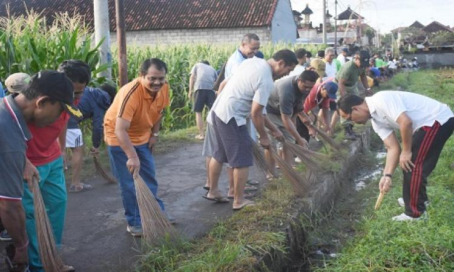

Dipublikasikan pada: 5 Juni 2025
Warga Desa Kuta Ujung Bersihkan Lingkungan Bersama-sama
Dalam rangka menjaga kebersihan dan mencegah genangan air di musim penghujan, masyarakat Desa Kuta Ujung mengadakan kegiatan gotong royong massal yang melibatkan seluruh lapisan masyarakat, mulai dari pemuda, ibu rumah tangga, hingga perangkat desa.
Kegiatan dilakukan di berbagai titik rawan banjir dan sampah seperti saluran irigasi, bahu jalan, dan halaman rumah ibadah. Warga tampak antusias membawa peralatan kebersihan seperti cangkul, sapu, dan karung sampah.
Selain membersihkan lingkungan, warga juga diberikan sosialisasi mengenai pentingnya membuang sampah pada tempatnya dan menjaga aliran air tetap lancar untuk mencegah bencana banjir di kemudian hari.
Acara ditutup dengan makan bersama yang mempererat kebersamaan antar warga. Pemerintah desa berharap kegiatan seperti ini dapat menjadi rutinitas berkala untuk memperkuat nilai sosial dan solidaritas masyarakat.
← Kembali ke Beranda